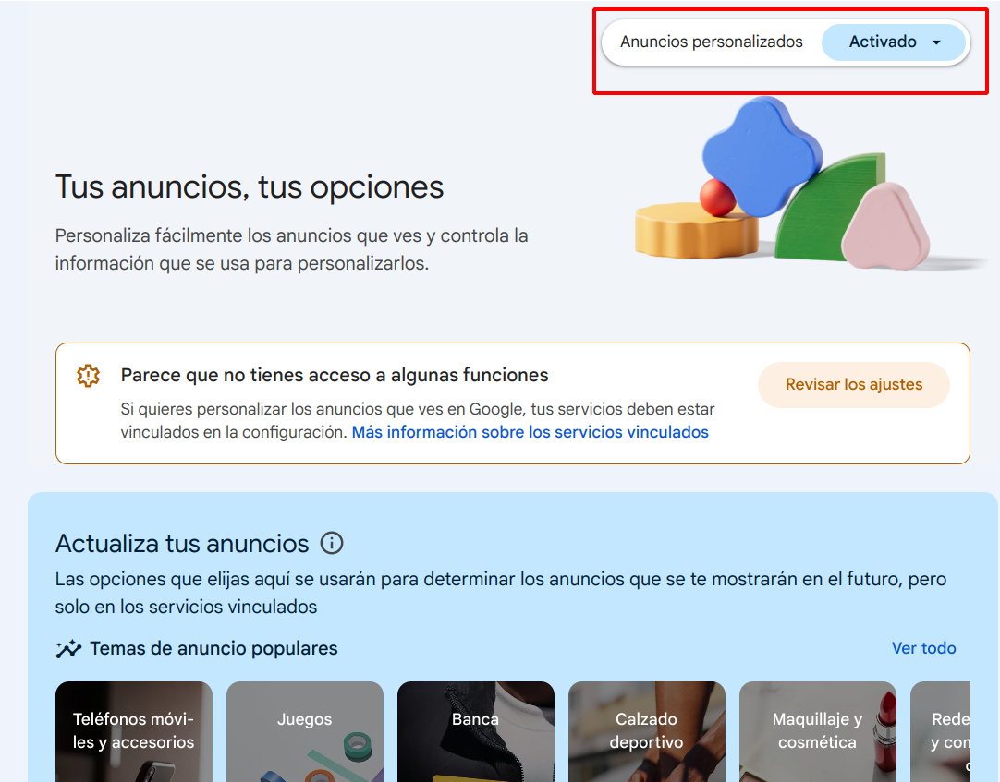

Utilizando Google como caso de estudio, este apartado explora la profundidad y el alcance del rastreo digital, un fenómeno no exclusivo de Google, sino una práctica común entre otros gigantes como Facebook, Instagram, TikTok, y otros muchos más.
Para empezar a revisar el seguimiento de Google, el mejor sitio es la página principal de Controles de Actividad de tu cuenta de Google. Si actualmente tienes iniciada sesión en Google en tu navegador, ese enlace debería llevarte directamente a él.
Si nos vas a acompañar en esta revisión de privacidad de tu cuenta Google, sería recomendable hacerlo con tu cuenta personal, en lugar de la corporativa (g.educaand.es), ya que el tratamiento de la información es diferente en ambas.
Los datos que Google tiene sobre ti están divididos en varias secciones:
1. Análisis de búsquedas y actividad web
Google registra cada búsqueda realizada y cada sitio visitado, creando un perfil detallado de intereses y comportamientos. Puedes revisar y gestionar esta información en la página de Controles de Actividad en la Web y en Aplicaciones. Podremos ver las páginas web que hemos visitado, las búsquedas web que realizamos y las aplicaciones que hemos abierto en nuestro teléfono Android (si está enlazado a dicha cuenta).
Si hacemos clic en filtrar por fecha y producto, se nos abrirá una pantalla en la que podemos ver todas las aplicaciones que cubre este seguimiento, desde el Asistente de Google hasta Google Play Store.
Para eliminar toda la actividad, seleccionamos el enlace "Eliminar actividad", y elegimos, desde siempre.
Para desactivar este seguimiento, hacemos clic en el botón "Se guarda la actividad".
2. Historial de ubicaciones
A través de nuestros dispositivos móviles, Google puede seguir nuestros movimientos, ofreciendo servicios basados en la ubicación, pero también compilando un historial detallado de nuestros hábitos y preferencias geográficas. Para ver y gestionar tu historial de ubicaciones, visita la Línea de tiempo de Google Maps.
En este caso los registros se muestran en un mapa; puedes ver los pequeños puntos que marcan los lugares en los que has estado y usar el menú desplegable, en la parte superior izquierda, para ver un rango de fechas más específico.

Si has realizado algún viaje mientras esta opción estaba activada, busca el punto en el mapa y haz clic en él. En el menú de la izquierda, podrás ver en detalle lo que hiciste, los sitios que visitaste, las horas, las fotografías que tomaste y mucha más información relevante. Aunque pueda parecer divertido al principio, una reflexión más profunda revela un serio problema de privacidad.
Para borrar estos datos de los registros de Google, haga clic en el icono de la papelera en la parte inferior. Si, por el contrario, quieres desactivar el seguimiento y eliminar toda la actividad, puedes hacerlo en la página de Controles de Actividad del Historial de ubicaciones.
Nota: La cronología de la versión web de Google Maps va a dejar de estar disponible. Es posible que para consultar tu cronología tengas que hacerlo a través de la aplicación Google Maps.
3. Historial de YouTube
Esta sección cubre, como dice su nombre, el Historial de búsquedas y reproducciones de YouTube. Tenemos la opción de borrar los registros a través del enlace Gestionar actividad de Youtube o de desactivar el seguimiento en la página de Controles de actividad del Historial de ubicaciones.
4. Anuncios dirigidos
Anteriormente estuvimos hablando de publicidad dirigida, veamos qué registra Google al respecto. Dirígete a Mi centro de anuncios para ver el perfil publicitario que Google ha creado sobre ti. Igualmente, como hemos visto en las secciones anteriores, puedes eliminar la actividad y desactivar el segumiento.

5. Dispositivos móviles
Todavía no hemos hablado de teléfonos móviles. Los principales datos que Google recopila a través de teléfonos se refieren a la ubicación, aunque obviamente también los rastrea a través de sus aplicaciones (Gmail, Google Docs, Google Maps), tal como lo hace en la web.
- En Android, ve al menú "Configuración" y luego selecciona "Google" para modificar algunas opciones de seguimiento de datos.
- En iOS, Google no tiene tanta "libertad" en el sistema operativo, como cabría esperar. Si abres la aplicación de Google para iOS, toca los tres puntos en la parte inferior derecha y luego elige Privacidad y Seguridad, ahí podrás evitar que Google rastree su ubicación en este dispositivo en particular.
Al sumergirnos en el universo de Google, hemos descubierto que almacena datos desde nuestras búsquedas web hasta nuestros movimientos en el mundo real. El debate se podría centrar en dos aspectos: primero, la extensa cantidad de datos que Google recopila sobre los usuarios; y segundo, el uso que Google da a esos datos. Mientras Google argumentará que esta recopilación de datos enriquece sus servicios, como personalizar recomendaciones de restaurantes, los usuarios podrían tener opiniones encontradas sobre estas prácticas.
Para comprender la razón detrás de este seguimiento, basta con observar a las cuentas anuales de la empresa. En 2023, sus ingresos publicitarios ascendieron a $237.85 billones, lo que representa el 77,4% de sus ingresos totales para ese año. Los ingresos publicitarios de Google se generan principalmente a través de su motor de búsqueda y la plataforma YouTube, que juntos representaron más del 90% de sus ingresos publicitarios en 2023.
En resumen, Google es fundamentalmente una empresa de publicidad. El éxito del modelo de negocio proviene de su capacidad para crear un ecosistema de servicios y aplicaciones que ofrecen a los usuarios de manera gratuita. Para impulsar esos anuncios, el navegador Chrome (y el motor de búsqueda de Google) recopilan la mayor cantidad de datos posibles sobre los usuarios. Luego "monetizan" estos datos en forma de anuncios altamente dirigidos. Cuanto más saben sobre ti, más dinero ganan.
Android Inc es propiedad de Google, pero no iOS, que es propiedad de Apple.